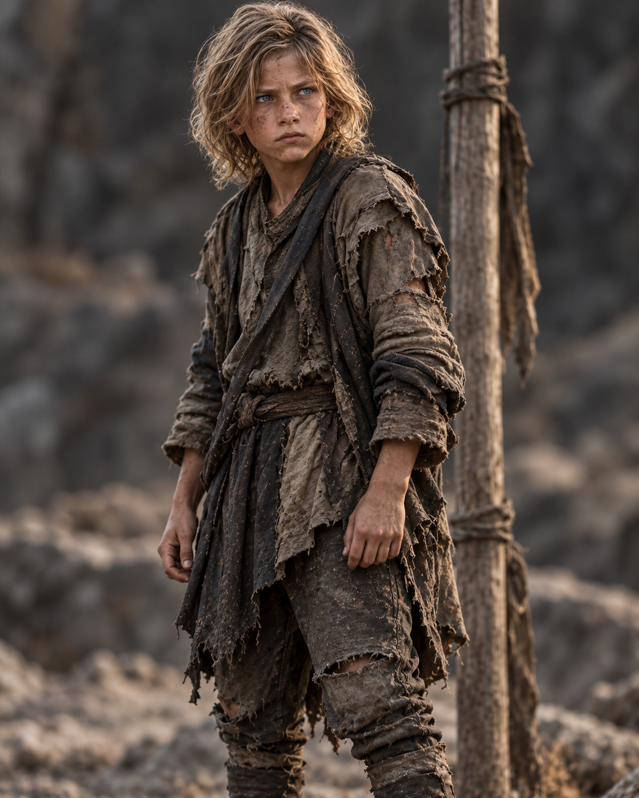
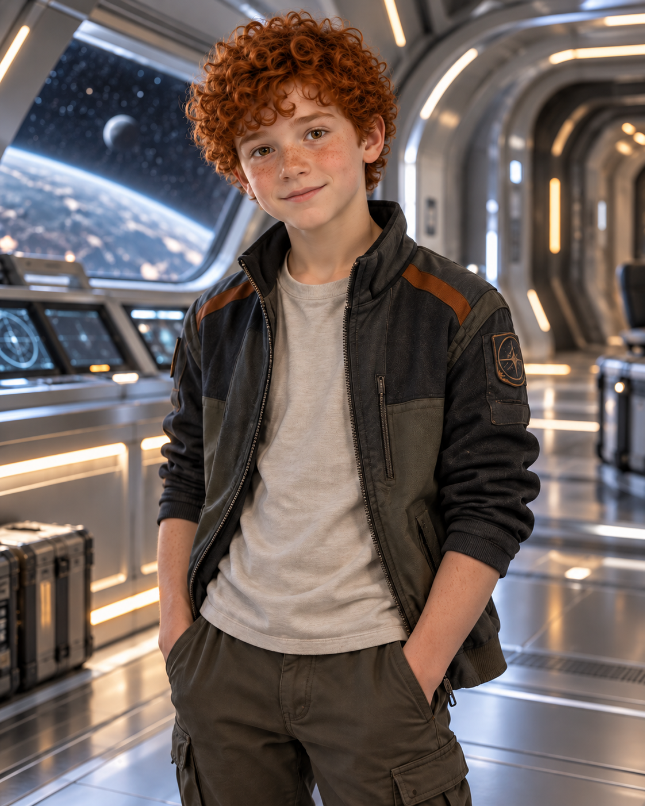
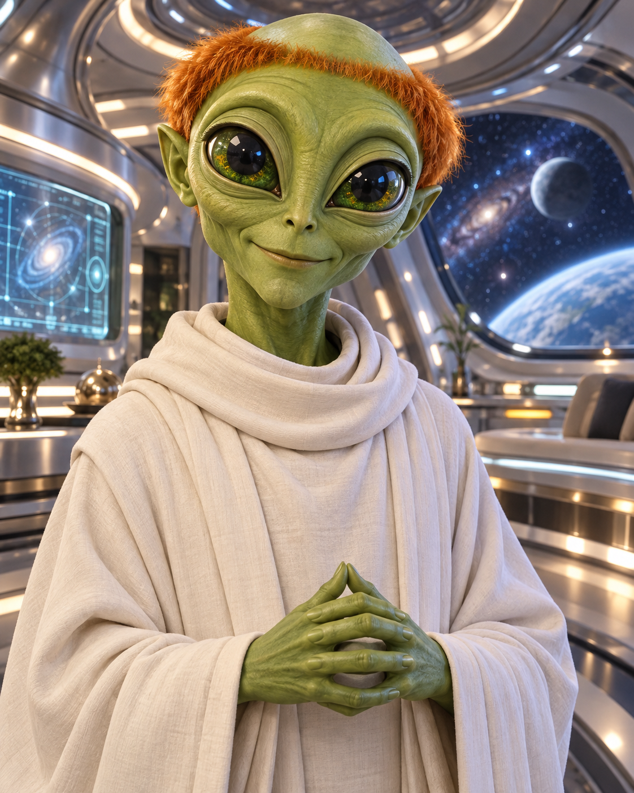
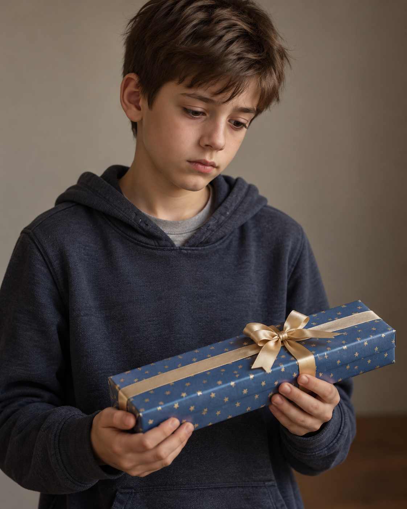

AGE
Twelve
Old enough to notice exactly why a plan is dangerous. Brave enough to help anyway.

THE CENTRAL CHARACTER
“Kieran treated every danger seriously—especially Kevin's ideas.”
Twelve years old. Thoughtful. Intelligent. Quietly funny. Usually the person checking Kevin's plan for the dangerous detail Kevin has somehow forgotten.
WHO IS KEVIN?
Kieran is thoughtful, careful and methodical. He prefers to understand a problem before acting, which is not always easy when Kevin has already rushed into the dangerous part.
Quiet does not mean weak. Kieran survives fear, loneliness and a world he does not understand without losing his kindness. When someone needs him, his courage appears in calm, practical ways.
His love for his mum, dad and little sister Kate keeps home alive in his mind. His bond with Kevin gives him someone who will fight beside him—and refuse to leave him behind.
AT A GLANCE
AGE
Old enough to notice exactly why a plan is dangerous. Brave enough to help anyway.
FAMILY
The people waiting at home, especially his little sister Kate, whom Kieran is determined to see again.
CLOSEST BOND
Impulsive where Kieran is careful, and the friend who refuses to leave him behind.
ALIEN ALLY
A calm, precise guide whose knowledge helps Kieran make sense of the impossible world around him.
STORY APPEARANCES
Kieran is one of the central characters in the Ke'Valien trilogy.
PEOPLE CLOSE TO KEVIN
Family and friendship give Kieran the strength to keep going, even when home feels impossibly far away.

CLOSEST FRIEND
Impulsive, loyal and impossible to ignore, Kevin becomes the friend Kieran trusts never to leave him behind.

FRIEND AND GUIDE
Calm under pressure and endlessly precise, Nivek helps Kieran understand the dangers of an unfamiliar universe.

FRIEND ON EARTH
Another friend from Earth who understands that surviving an impossible adventure changes the way home feels.
ONE THOUGHTFUL BOY
Kieran's courage is rarely loud. It appears in the moment he stands his ground, protects someone else or takes another careful step towards the family waiting for him at home.
Meet the Rest of the Cast